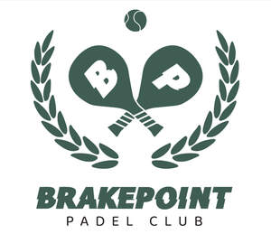

Trade Mark Journal No.2026/001 2 January 2026
UK00004277174 13 October 2025 (25,28,35,41)

- Class 25
- Sports shirts; Sport shirts; Sports jerseys and breeches for sports; Clothing for sports; Sports clothing.
- Class 28
- Nets for sporting ball games; Sporting articles; Men's athletic supporters [sports articles]; Balls being sporting articles; Sporting articles and equipment; Racketball racket strings; Rackets; Racket cases; Balls for racket sports; Racket covers; Racket grip tapes; Racket cases [for tennis or badminton]; Racket grip tape; Rackets [for tennis]; Rackets (Strings for -); Protective covers for rackets; String materials for sporting racquets; Racketball balls; Balls for playing racketball; Balls for playing paddleball; Paddles for playing platform tennis; Sport balls; Ball nets; Rubber balls.
- Class 35
- Business management of sporting clubs; Promotion of sports competitions and events; Business management of sporting venues [for others].
- Class 41
- Management of events for sporting clubs; Sports club services; Provision of sporting club facilities; Club sporting facilities (Provision of -); Organisation of sporting competitions and sports events; Organising of sporting activities and of sporting competitions; Organisation of sporting competitions; Organising of sporting events, competitions and sporting tournaments; Country clubs providing sporting facilities; Sporting competitions (Organising of -); Organization of sporting events and competitions; Organisation of sporting events and competitions; Organisation of sporting events; Organisation of sporting activities and competitions; Organization of sporting events; Fan club organisation; Fan club services (entertainment); Fan club services; Sporting activities; Organisation of sports events in the field of football; Organising of sports competitions and sports events; Organising of sports events and of sports competitions; Sporting event organization; Provision of sporting competitions; Organisation of sports competitions; Sporting competitions (Arranging of -); Providing facilities for sporting events, sports and athletic competitions and awards programmes; Fan clubs; Fan clubs (Organisation of -); Organising of sporting activities and competitions; Organising of sporting activities or competitions; Organisation of sports tournaments; Organising of sports and sports events; Organization of sports competitions; Competitions (Organization of sports -); Fitness club services; Gymnasium club services; Organising of sporting events; Organising sporting events; Club [discotheque] services; Sporting and recreational activities; Organising community sporting events; Organization of sport fishing competitions; Entertainment club services; Club entertainment services; Club services [entertainment]; Handicapping for sporting events; Organisation of football competitions; Club [cabaret] services; Entertainment services in the nature of a wrestling club; Organising of sporting contests; Dance club services; Organising of sports competitions; Competitions (Organising of sports -); Sports competitions (Organising of -); Comedy club services; Sporting and cultural activities; Cultural and sporting activities; Production of sporting events; Sporting services; Organization of electronic sports competitions; Organisation of events for cultural, entertainment and sporting purposes; Organising of sports competitions and events; Organisation of professional golf tournaments or competitions; Entertainment, sporting and cultural activities; Organisation of golf competitions; Night club services [entertainment]; Production of sporting events for radio; Organization of sporting events and competitions, involving animals; Hosting of fantasy sports leagues; Organization of soccer competitions; Provision of sporting events; Arranging of sporting events; Sports and fitness; Coaching services for sporting activities; Rental of equipment for use at sporting events; Organizing community sporting and cultural events; Organising of sports events; Tournaments (Staging of sports -); Organising of football events; Organisation of recreational competitions; Production of sporting events for television; Arranging of sports competitions; Arrangement of sports competitions; Organisation of recreational tournaments; Entertainment services in the nature of sporting events; Providing sports facilities for playing polo; Organisation of yachting competitions; Services for the organisation of football events; Health and fitness club services; Health club [fitness] services; Sports coaching; Services for the organisation of sports events; Provision and management of sporting events; Health club services; Organisation of golf tournaments; Organisation of entertainment competitions; Entertainment services relating to sporting events.
BRAKEPOINT LIMITIED